Complete Guide to Surface Finish Charts, RA, RZ, Measurements, Callouts and Symbols
Definition of Surface Finish
Engineering prints call out a great many things in their attempt to make sure the part that gets made matches the designer's intent. Aside from dimensions and tolerances, another important callout is Surface Finish.
Surface Finish is a measure of the overall texture of a surface that is characterized by the lay, surface roughness, and waviness of the surface. Surface Finish when it is intended to include all three characteristics is often called Surface Texture to avoid confusion, since machinists often refer to Surface Roughness as Surface Finish. Another term, analagous to Surface Texture, is Surface Topology.
This diagram gives an idea of how to think of the relationship of Waviness, Lay, and Roughness:
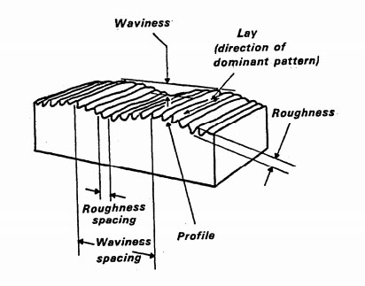
The relationship of Waviness, Lay, and Roughness...
Lay
The Lay is the direction of the predominant surface pattern, and is usually determined by the production method used to process the surface. Here are some typical Lay patterns:
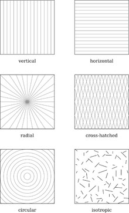
Surface Finish Lay Patterns...
Surface Roughness
Surface roughness is a measure of finely spaced surface irregularities. Surface roughness is usually what machinists refer to when talking about "surface finish." When talking about all three characteristics, they may use the term "Surface Texture" more properly.
Waviness
Surface Roughness speaks to fine detail imperfections, but there may also be much coarser irregularities. For example, a surface may be warped or deflected from the ideal.
Surface Finish and Product Function
How do product designers decide what surface finishes to require, and how should CNC machinists think about surface finishes?
There are a variety of considerations, and they may even vary for different stages in the manufacture of a particular part. For example, we may have a surface finish requirement on a casting that ensures the finish (think of it as the deviations of the surface of the casting from an ideal) is good enough that the allowance made for extra material that will be machined off in a future step is sufficent. If the casting is too imperfect, the trough of an imperfection may be below the expected machined surface of that future step.
Another important consideration is friction. Reducing surface roughness typically reduces friction which can be critical to reducing wear and increasing efficiency of sliding parts.
The required surface finishes are very much determined by the function and use of the component. Ship's propellors start out with fairly high surface finish standards but in actual use they erode pretty quickly. Optical and especially components used with X-Rays have some of the finest surface finish requirements achievable.
The goal of the designer is to specify surface finishes that are as coarse as possible but will still function within the part's desired operating parameters. The goal of the machinist is to achieve surface finishes on parts that are as good as those required by the designer, but not better as that results in the cheapest to manufacture parts. It's important for designer and manufacturer to agree on exactly which parameters (Ra, Rz, etc..) are to be used for inspecting and parts acceptance. While there are commonly accepted conversions between these, actually using the same parameters for the inspection that the designer used with the design always yields the best results.
Surface Finishes for Various Manufacturing Processes
Surface Finishes vary tremendously by the manufacturing process used to achieve them. A flame cut plate edge has a radically different surface finish than a ground surface, for example. Choosing a process that's capable of achieving the desired surface finish is the first step in figuring out how to manufacture a part that requires a particular finish. Sometimes, more than one process must be overlaid to achieve the desired result cost-effectively.
Here's a chart table showing the relative surface finish roughness of various manufacturing processes:
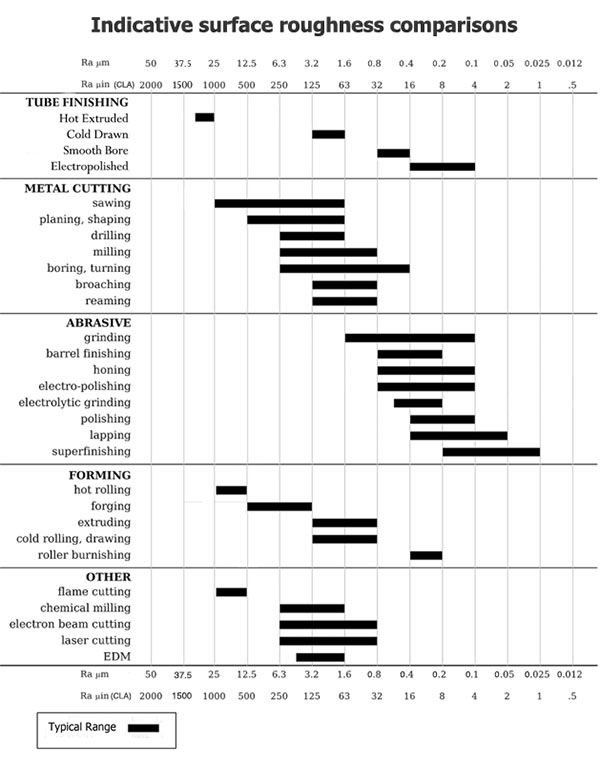
Relative Surface Finish Roughness of Manufacturing Processes...
Measuring and Inspecting Surface Finish
Measurement implies characterizing something as a number--something that's very important to CNC'ers.
There are a number of different characteristics we might measure with respect to Surface Finish. Two of the most important are the height of the roughness peaks and their separation, often referred to as "Ra" and "D":
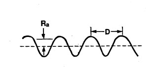
Ra and D are two important surface finish parameters...
The Surface Finish Units we would use for parameters like Ra would be either micro-inches (English or Imperial) or micrometers (Metric). Our chart of surface finishes by manufacturing process (see above) gives both.
When we try to measure a surface finish, the methods fall into three categories:
- Profiling Techniques: Here a high resolution probe is used to measure the surface. Think of a sensitivity more in line with a phonograph needle than a typical CNC Probe.
- Area Techniques: With an area technique, a finite area is measured and this provides a statistical average of the peaks and valleys. Examples of area techniques include optical scattering, ultrasonic scattering, and capacitance probes. Area techniques are easier to automate and faster to execute, but profiling techniques are often more accurate.
- Microscopy Techniques: These techniques are usually more qualitative because they rely on measurement of contrast to provide information about peaks and valleys.
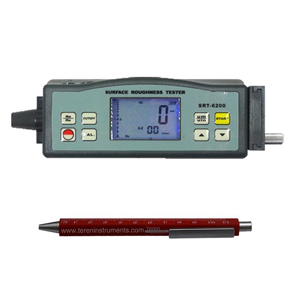
Pocket Profilometer...
Surface Finish Units From RA To RZ
Ra - Average Roughness
Ra is also known as Arithmetic Average (AA) or Center Line Average (CLA). It is the average roughness in the area between the roughness profile and its mean line. Graphically, Ra is the area between the roughness profile and its centerline divided by the evaluation length. The evaluation length is normally five sample lengths where each sample length is equal to one cutoff length.
Ra is by far the most commonly used Surface Finish parameter. One reason it is so common is that it is fairly easy to take the absolute value of a signal and integrate the signal using analog electronics, so Ra could be measured by instruments that contain no digital circuits.
Ra, while common, is not sufficient to completely characterize the roughness of a surface. Depending on the application, surfaces with the same Ra can perform quite differently. Here are 4 surfaces with the same Ra and quite different shapes:
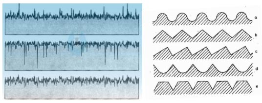
All four surfaces have the same Ra but quite different shapes...
To distinguish these differences, more parameters are needed.
Rmax - Vertical distance from highest peak to lowest valley
Rmax is particularly sensitive to anomalies such as scratches and burrs that may not be obvious from measures such as Ra that rely on averages.
Rz - Preferred by many Europeans
Rz is often preferred to Ra in Europe and particularly Germany. Instead of measuring from centerline like Ra, Rz measures the average of the 5 largest peak to valley differences within five sampling lengths. While Ra is relatively insensitive to a few extremes, Rz is quite sensitive since it is the extremes it is designed to measure.
Surface Roughness Grades: "N" Numbers
Here is a chart table showing how Roughness Grade Numbers convert to Ra numbers:
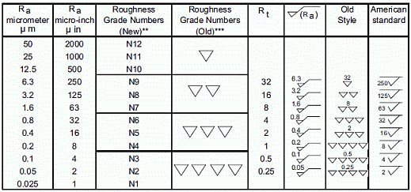
Roughness Grade Numbers and Ra Measures...
Surface Roughness of Abrasive Grits and Sandpaper
One approach to Surface Finish is to use abrasives or sand the surface. This chart converts from abrasive grit to Surface Finish Ra values:
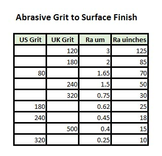
Surface Finish Math and Equations
To Calculate |
Equation |
Notes |
| Ra |
Ra = CLA = (M1 + M2 + M3 + M4) / 4
Where:
M1, M2, ... Mn are measure values |
Average Roughness in micro-meters or micro-inches. Ra is the arithmetic mean deviation of the profile |
| Rc |
|
Mean height of profile irregularities |
| Rku |
|
Kurtosis of the profile |
| Rmax |
|
Maximum roughness depth |
| Rmr |
|
Material Ration of the profile |
| Rp |
Rp = MAX( M1, M2, M3, ... ) |
Max profile peak height |
| Rq |
Rq = RMS |
Root mean square deviation of the profile |
| Rsk |
|
Skewness of the profile |
| Rt |
|
Max height of the profile |
| Rv |
Rv = MIN( M1, M2, M3, ... ) |
Max Profile Valley Depth |
| Ry |
|
Max height of the profile |
| Rz |
Rz = Ra x 7.2
This is a very ROUGH estimate and not an exact conversion! |
Avg Max height of the profile |
| Rz ISO |
|
Roughness Height |
| RPM |
|
Average max profile peak height |
| RMS |
RMS = SQRT( (M1^2 + M2^2 + M3^2 + M4^2) / 4 ) |
Root Mean Square |
| |
|
|
| |
|
|
| CLA |
CLA = Ra |
Center Line Average |
| Cut-Off Length |
|
Length required for sample |
| N |
N = Ra (um) x 40 |
New ISO (Grade) Scale Numbers |
Surface Finish Symbols, Callouts, and Standards
In the United States, surface finish is usually specified using the ASME Y14.36M standard. The rest of the world commonly uses International Organization for Standardization (ISO) 1302.
Callouts and symbols used for different surface finishes can be slightly different, so we'll look at a couple.
ISO Surface Finish Symbols and Callouts
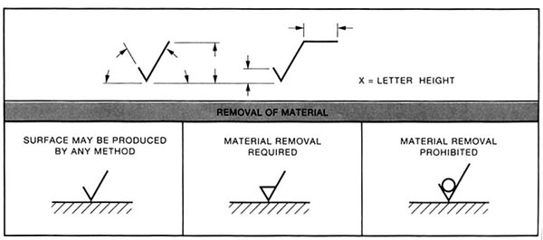
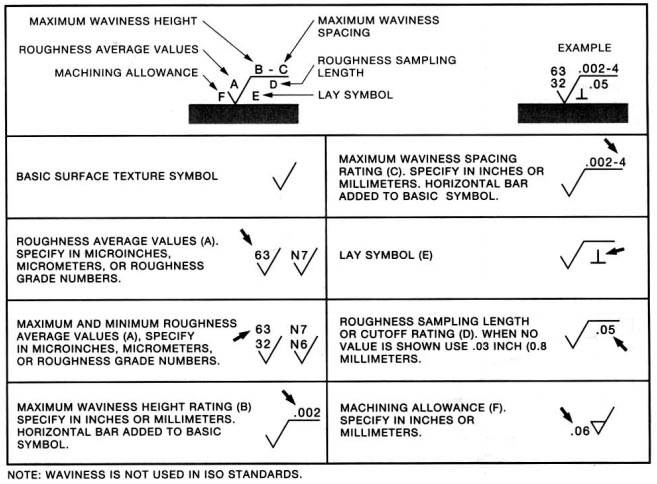
ANSI Surface Finish and Callouts
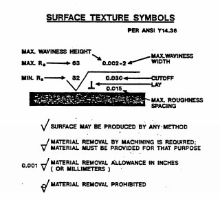
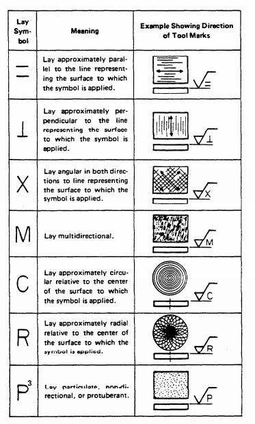
Surface Finish Symbols and Callout Example
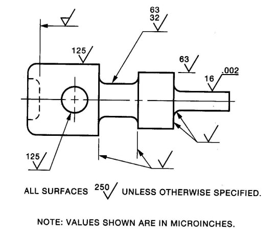
GD&T Surface Finish
Someone will be along soon to finish this section!
Surface Finish Cheat Sheet
A super handy Surface Finish "Cheat Sheet":
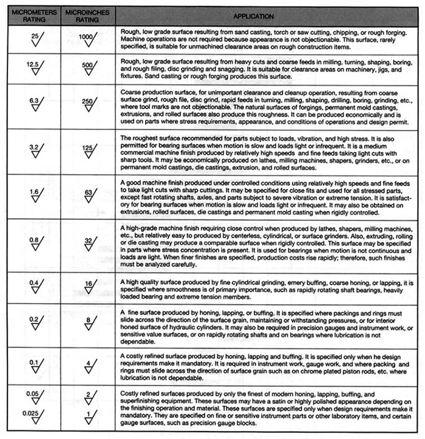
Factors Affecting Surface Finish
There are many factors that affect surface finish, with the biggest being the manufacturing process (see table above). For machining processes, such as milling, turning, and grinding, factors such as cutting tool selection, machine tool condition, toolpath parameters, feeds, speeds, tool deflection, cut width (stepover), cut depth, coolant, and vibration are just a few of the many.
Tips and Examples:
- When Face Milling, use a cutting tool with a lead angle other than 90 degrees. A 45 degree lead angle facemill will produce a finer finish.
- Use inserts with a larger radius. A toroidal cutter or copy mill can often leave a better finish than other insert geometries.
- Unless the insert height on your face mill can be individually adjusted, a fly cutter often leaves the best surface finish.
Feeds and Speeds and Surface Finish
In general, adjust feeds and speeds for a lower chipload at the same rpms for a better finish. Take a finish pass that's relatively light as well. Make sure as you're doing this to avoid rubbing, which is very hard on tool life.
Our G-Wizard Calculator software has a handy "Tortoise-Hare" slider that makes it easy to dial in proper feeds and speeds for a finishing pass:
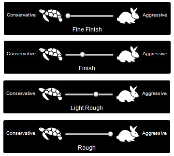
G-Wizard's Tortoise-Hare slider for dialing in your finish...
G-Wizard will also warn you if rubbing is a risk, which will help you avoid that problem.
Ballnose Scallops and 3D Profiling Surface Finish
If you're 3D Profiling, each pass of the ballnosed cutter leaves a "scallop" in the surface of the material. Our G-Wizard Calculator software has a special Mini-Calc that will help you adjust for a scallop height that delivers the required surface finish:
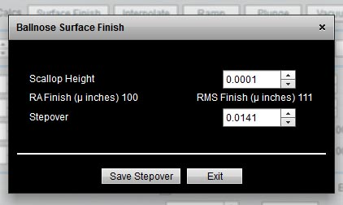
Ballnose Surface Finish Calculator...
Enter the maximum scallop height and G-Wizard will tell you the resulting RA and RMS surface finish as well as calculate the stepover. BTW, if you want to know how to pick optimal stepovers and tool diameters for 3D Profiling, we've got an article on that too!
Surface Finish While Turning
Turning is very similar to 3D profiling in that the stepover, in this case determined by the feedrate while turning, results in scallops that match the shape of the turning insert. We use this to good effect when turning threads, but if we want a smooth shaft, we'll have a surface finish requirement that must be met. That will determine feedrate and insert nose radius we can use for the job. G-Wizard has a nice calculator for that too:
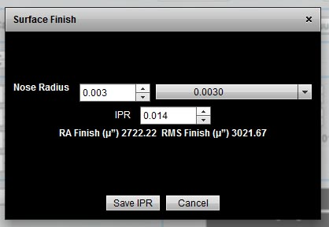
Surface Finish Turning Calculator...
Surface Roughness Conversion Chart Tables - Metric and Imperial
| |
|
|
|
|
Cut-off Length |
| Ra (µm) |
Ra (µinches) |
RMS |
Rt |
N |
in |
mm |
| 0.025 |
1 |
1.1 |
0.3 |
1 |
0.003 |
0.08 |
| 0.05 |
2 |
2.2 |
0.5 |
2 |
0.01 |
0.25 |
| 0.1 |
4 |
4.4 |
0.8 |
3 |
0.01 |
0.25 |
| 0.2 |
8 |
8.8 |
1.2 |
4 |
0.01 |
0.25 |
| 0.4 |
16 |
17.6 |
2 |
5 |
0.01 |
0.25 |
| 0.8 |
32 |
32.5 |
4 |
6 |
0.03 |
0.8 |
| 1.6 |
63 |
64.3 |
8 |
7 |
0.03 |
0.8 |
| 3.2 |
125 |
137.5 |
13 |
8 |
0.1 |
2.5 |
| 6.3 |
250 |
275 |
25 |
9 |
0.1 |
2.5 |
| 12.5 |
500 |
550 |
50 |
10 |
0.1 |
2.5 |
| 25 |
1000 |
1100 |
100 |
11 |
0.3 |
8 |
| 50 |
2000 |
2200 |
200 |
12 |
0.3 |
8 |
|
|
|
|
|
|
|